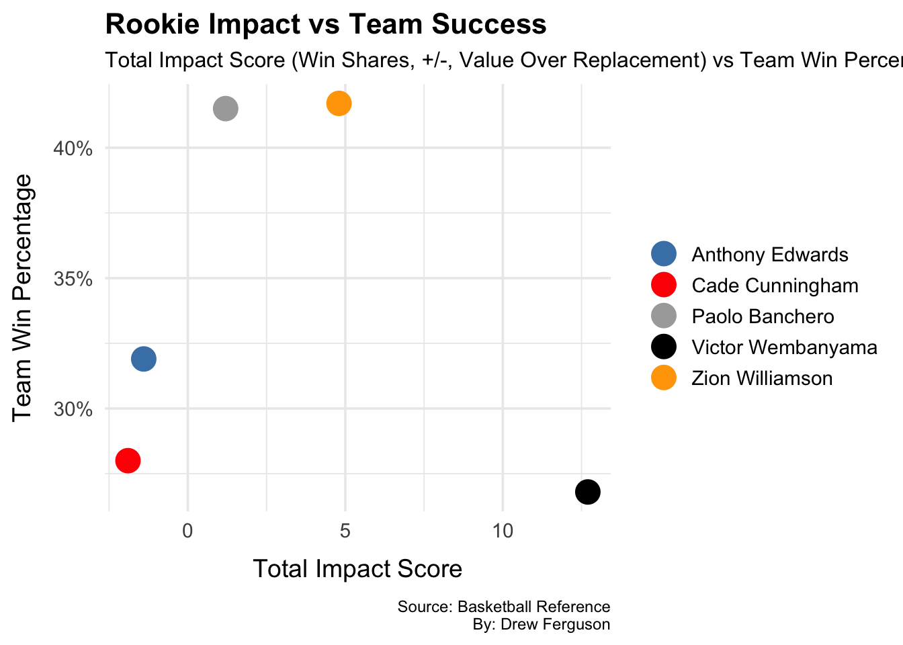

Have the NBA’s last five #1 overall picks been living up to the expectations? (2019-2023)
In today’s NBA, top draft picks are expected to contribute immediately. The rise of social media, massive media coverage, and franchise-level expectations have placed unprecedented pressure on rookies—especially those selected with the #1 overall pick. Teams often rely on these players not just to develop, but to become instant cornerstones of their teams. This project shows how the last five #1 picks have performed in their rookie seasons, how their advanced stats aligned with team success in their first season, and how their early production compares to their overall career averages. The goal is to explore the impact, growth, and expectations placed on basketball’s most highly-touted young stars. (Note: Zaccharie Risacher is not included as he has only played one full season.)
Code
library(tidyverse)
── Attaching core tidyverse packages ──────────────────────── tidyverse 2.0.0 ──
✔ dplyr 1.1.4 ✔ readr 2.1.5
✔ forcats 1.0.0 ✔ stringr 1.5.1
✔ ggplot2 3.5.1 ✔ tibble 3.2.1
✔ lubridate 1.9.4 ✔ tidyr 1.3.1
✔ purrr 1.0.2
── Conflicts ────────────────────────────────────────── tidyverse_conflicts() ──
✖ dplyr::filter() masks stats::filter()
✖ dplyr::lag() masks stats::lag()
ℹ Use the conflicted package (<http://conflicted.r-lib.org/>) to force all conflicts to become errors
My first chart stacks the per-game averages for Points, Rebounds, and Assists during the rookie seasons of the last five #1 overall picks: Zion Williamson, Anthony Edwards, Cade Cunningham, Paolo Banchero, and Victor Wembanyama. Let’s see how their respective inaugural seasons compared to each others.
Code
rookie_pra_stats <- rookie_pra_stats |>mutate(Player =factor(Player, levels =c("Anthony Edwards","Cade Cunningham","Paolo Banchero","Zion Williamson","Victor Wembanyama" )))ggplot(rookie_pra_stats, aes(x = Value, y = Player, fill = Stat)) +geom_bar(stat ="identity") +geom_text(aes(label =round(Value, 1)),position =position_stack(vjust =0.5),size =3, color ="white") +scale_fill_manual(values =c("Assists"="red", "Rebounds"="forestgreen", "Points"="steelblue" ),breaks =c("Points", "Rebounds", "Assists") ) +labs(title ="Rookie Season Per-Game Averages",subtitle ="Points, Rebounds, And Assists For The Last Five #1 Draft PicksIn Their Rookie Season",x ="Per-Game Total", y ="",fill ="",caption ="Source: Basketball ReferenceBy: Drew Ferguson" ) +theme_minimal(base_size =12) +theme(legend.position ="top",plot.title =element_text(face ="bold"),axis.text.y =element_text(face ="bold"),plot.caption =element_text(hjust =1, size =9, margin =margin(t =10)) )
What’s interesting isn’t just who had the highest combined stats, it’s how different their rookie seasons were. Zion Williamson came in as a scoring machine, putting up over 22 points per game in just 24 appearances. Victor Wembanyama paired elite scoring with huge rebounding numbers, already showing signs of a generational two-way presence (this chart doesn’t even show his league leading 3.8 blocks per game.) Cade Cunningham and Paolo Banchero posted similar stat lines, proving themselves as steady all-around contributors. Anthony Edwards, known for his explosiveness, delivered in scoring and added sneaky value as a rebounder. The chart shows how each player’s early role reflected not just their skill-set, but also the situation they walked into. Some were expected to be franchise cornerstones from day one; others had time to ease in. But what they all share is the pressure, and production, that comes with being the #1 pick in the age of social media and nonstop analysis.
Being the number one overall pick comes with big expectations, not just to perform individually, but to elevate the entire team. In this chart, we map each player’s rookie Total Winning Impact Score against their team’s overall win percentage during that same season. The goal? To see how much their on-court impact translated into team success.
Code
ggplot(chart2_data, aes(x = Impact_Score, y = Team_Win_Pct, color = Player)) +geom_point(size =6) +scale_color_manual(values = player_colors) +scale_y_continuous(labels = scales::percent_format(accuracy =1)) +labs(title ="Rookie Impact vs Team Success",subtitle ="Total Impact Score (Win Shares, +/-, Value Over Replacement) vs Team Win Percentage",x ="Total Impact Score",y ="Team Win Percentage",color ="",caption ="Source: Basketball ReferenceBy: Drew Ferguson" ) +theme_minimal(base_size =14) +theme(plot.title =element_text(face ="bold", size =16),plot.subtitle =element_text(size =12),axis.title.x =element_text(margin =margin(t =10)),axis.title.y =element_text(margin =margin(r =10)),legend.position ="right",plot.caption =element_text(hjust =1, , size =9, margin =margin(t =10)) )

What this comparison reveals is how complex that connection really is. For example, Victor Wembanyama’s rookie year was statistically dominant, and his Win Shares reflect that, yet the Spurs still struggled as a team. In contrast, Paolo Banchero’s production came in a more structured environment, where the Magic were on the rise and his numbers helped fuel real wins. Zion’s shortened rookie season still produced a strong Win Share value despite playing just 24 games, while Cade Cunningham and Anthony Edwards posted solid individual contributions amid team rebuilds. The biggest takeaway is that a rookie’s impact doesn’t happen all at once, or all because of them. Even elite players need a system, coaching, and supporting cast to turn stats into wins. This chart adds important context to the numbers, as it shows that while some rookies shine individually, others start shifting their team’s identity from the moment they step on the floor. The best front offices aren’t just drafting talent, they’re building environments where that talent can actually win.
A player’s rookie season tells us a lot — but it doesn’t tell the whole story. This chart compares each players rookie per-game stats with their current career averages. Using a dumbbell plot, we can clearly visualize how their production has changed over time in three core areas: Points, Rebounds, and Assists.
Code
ggplot(rookie_vs_career_long, aes(y =fct_reorder(Player, Value), x = Value, color = Type)) +geom_line(aes(group = Player), color ="gray", linewidth =2) +geom_point(size =4) +scale_color_manual(values =c("Rookie"="steelblue", "Career"="orange"), breaks =c("Rookie", "Career") ) +labs(title ="Rookie vs Career Total Per-Game Production",subtitle ="Comparing Combined Points + Rebounds + Assists Per Game From Rookie Season To Career Averages",x ="Total Per-Game Average",y ="",color ="Averages",caption ="Source: Basketball ReferenceBy: Drew Ferguson", ) +theme_minimal(base_size =14) +theme(plot.title =element_text(face ="bold", size =16),plot.subtitle =element_text(size =12),axis.text.y =element_text(face ="bold"),legend.position ="top",plot.caption =element_text(hjust =1, size =9, margin =margin(t =10)) )
The plot highlights both consistency and growth. For instance, Anthony Edwards and Paolo Banchero have maintained steady numbers, showing that their rookie impact wasn’t a fluke — it was just the beginning. Zion Williamson stands out with an early scoring burst that set a high bar, while his career average has slightly fluctuated due to injuries and limited availability. Cade Cunningham shows upward movement in assists, reflecting his growing role as a floor general, while Victor Wembanyama, though early in his career, is already laying the foundation of a stat-stuffing trajectory. What this chart reveals is how these players young careers have evolved. Some of these players have come in hot and stayed hot, while others build over time, adjusting to the pace, system, and expectations of the league. Rookie years are high-pressure snapshots. If this chart shows us anything, it’s that these young players have shown consistent improvement in a short time frame.
In conclusion, we have done a deep dive into how the last five #1 overall picks have performed in the early stages of what are projected to be illustrious careers. From Victor Wembanyama’s immediate rise to Zion Williamson’s consistent efficiency, each of these players has brought a unique contribution to their team. What’s common between these players? Each of them is on-pace to become the face of their franchise. heir trajectories also reveal that early success doesn’t always translate directly to team wins — emphasizing that player development is only one piece of a much larger puzzle. As these stars continue to evolve, this snapshot reminds us how dynamic the rookie experience can be, and how the pressure to perform early is shaping the future of the league.